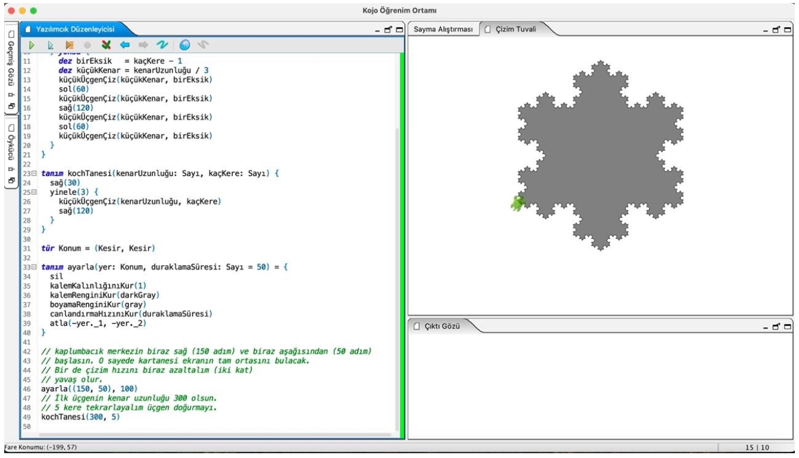
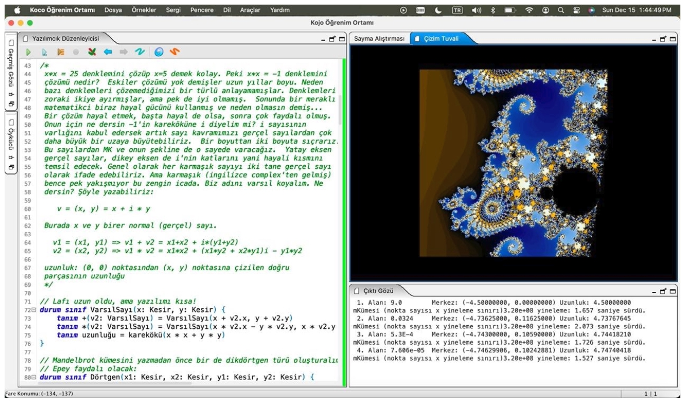
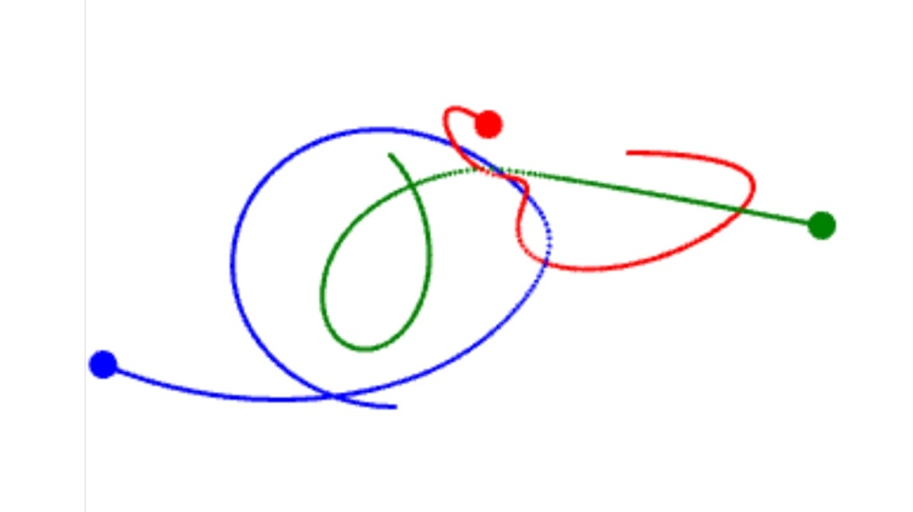
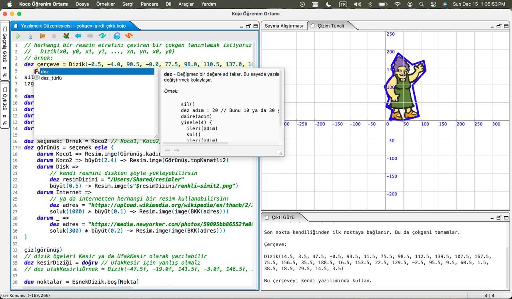

Fen Lisesi için Koco ve Scala
Programlamaya
ve Algoritmalara
Keyifli ve İşlevsel
Bir Giriş
Altı bölüm, bir kaplumbağa, bol fraktal ve bir sürü çizim.
Her satırın sonucunu anında ekranda görün.
I İlk Adımlar · II Veri · III Soyutlama ·
IV Özyineleme · V Çizgeler · VI Dinamik Programlama




hepsi Koco'da yazılmış
programların çıktısı
Bülent Başaran2026 · ilk taslak
CC BY-SA 4.0 · kod MIT
github.com/bulent2k2/cpp_ogreniyoruz